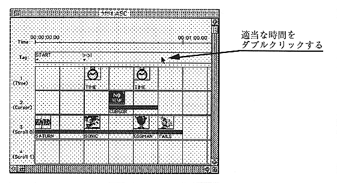
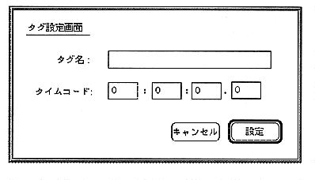

Tag settings
To set a tag indicating the branch destination
[1] Double-click an appropriate time in the tag name setting area of the scenario window (Figure 2.19).
[2] The tag name setting dialog opens (Figure 2.20). Enter the tag name.
[3] Enter the exact time at the branch destination.
Caution If the object data playback start time is earlier than the tag setting time
The object is not played.

Figure 2.19 Tag name setting

Figure 2.20 Tag setting dialog